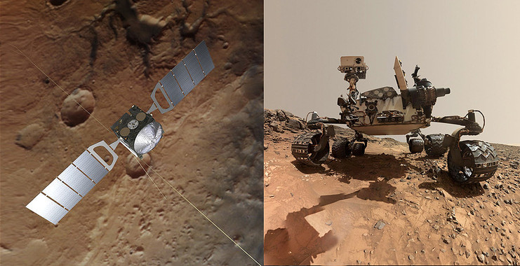
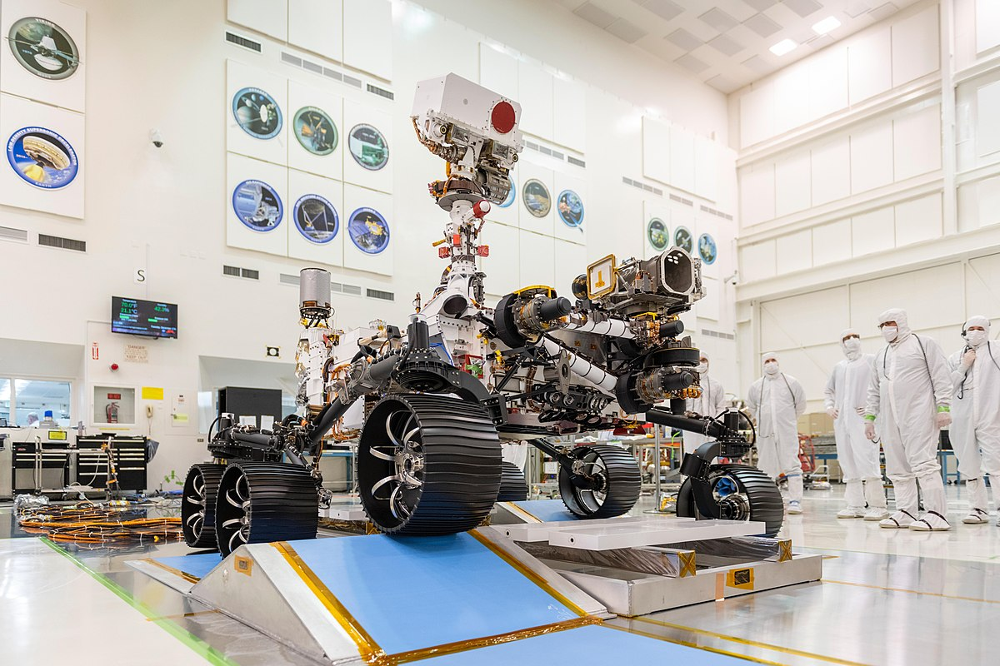
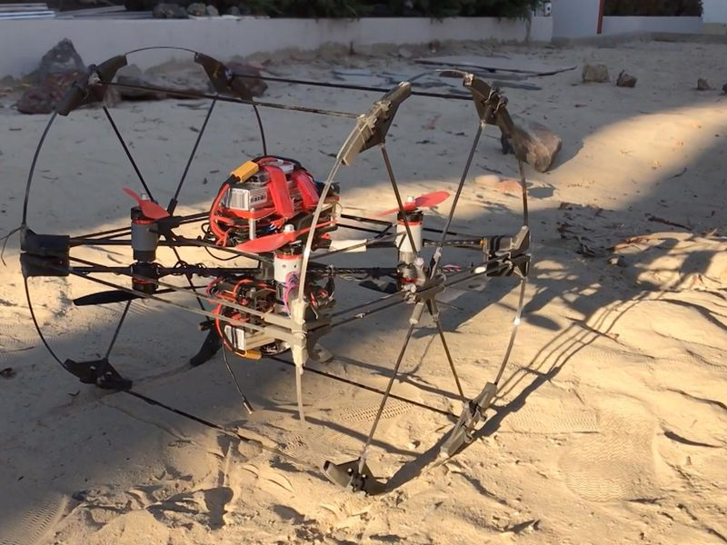
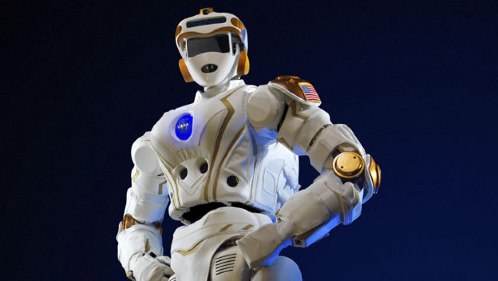

Mars Express
Esta nave de exploración llegó al espacio abordo de un cohete ruso. Se impulsó sola hacia la órbita marciana, descubrió depósitos de hielo bajo la superficie del Planeta Rojo, detectó metano en la atmósfera marciana y estudió la suelo marciano en detalle.
Mars Express consiste de dos partes, el Mars Express Orbiter y el Beagle 2, un aterrizador diseñado para investigar exobiología y geoquímica in situ en la superficie marciana. El Beagle 2 falló al intentar aterrizar en la superficie de Marte, pero el orbitador ha estado realizando investigaciones científicas satisfactoriamente desde entonces.
 Mars Express explorando el territorio marciano.Perseverance (rover)
es un vehículo Mars rover fabricado por el Laboratorio de Propulsión a Reacción que forma parte de la misión espacial Mars 2020 del Programa de Exploración de Marte de la NASA con destino al planeta Marte. Su diseño es casi idéntico al rover Curiosity, controlará siete instrumentos científicos para estudiar la superficie marciana empezando desde el cráter Jezero, llevará a bordo 23 cámaras y dos micrófonos.
El mismo equipo de ingenieros que diseñó el rover Curiosity estuvo involucrado en el diseño de Perseverance. Rediseñaron las ruedas del nuevo rover para que fueran más robustas que las del Curiosity, que con el transcurso de su uso sufrieron algún daño. En esta ocasión sus ruedas serán de aluminio, más gruesas y duraderas, con un ancho reducido y un diámetro mayor (52.5 cm, 20.7 in) que las ruedas del Curiosity que eran de 50 cm (20 in).
 Perseverance(rover) una nueva oportunidad.Shapeshifter
Básicamente se trata de un robot modular que puede navegar, ir por superficies sólidas y volar. Es decir, estaría preparado para prácticamente cualquier situación a la que enfrentarse en un planeta desconocido. El robot está siendo desarrollado dentro del programa Innovative Advanced Concepts de la NASA, y básicamente es un ''laboratorio'' de ideas para explorar planetas.
el Shapeshifter puede rodar gracias a las dos grandes ruedas que tiene en los laterales, pero también puede dividirse sobre la marcha para funcionar como un dron y navegar en líquidos pero también volver a ensamblarse para rodar por un terreno escarpado.
Dentro de cada uno de estos módulos cabrán unos 10 robots y la misión apunta, directamente, a Titán, una de las lunas de Saturno cuya orografía no es conocida y que, por eso, ha condicionado el diseño del Shapeshifter con tantas posibilidades a la hora de desplazarse por el terreno.  Shapeshifter el robot anfibio de la nasa
Valkyrie
Para la futura colonización de Marte, la NASA confía en el robot Valkyrie Robonaut 5 y en el buen hacer de los expertos en robótica de todo el mundo. Por ello, con motivo de mejorar la inteligencia y la autonomía de este humanoide, organizó el concurso Space Robotics Challenge, que ya cuenta con 20 equipos finalistas y cuya final tendrá lugar el próximo mes de junio.
Valkyrie es un robot humanoide robusto, totalmente electrónico, diseñado especialmente para ser resistente, soportar temperaturas extremas y sobrevivir en ambientes hostiles que no proporcionan las condiciones adecuadas para la vida humana. Está equipado con un sofisticado sensor perceptual y diversas cámaras ubicadas en la cabeza para estudiar el entorno, cuenta con brazos, piernas y manos totalmente articuladas y se mueve mediante la energía de una batería.
 Perseverance(rover) una nueva oportunidad.